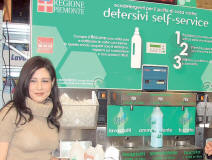

Detersivi self-service per un futuro sostenibile
Da una tesi di laurea, un progetto innovativo che coniuga le
esigenze di risparmio dei consumatori con il rispetto per l’ambiente. E in
Piemonte, Auchan, CRAI e Ipercoop adottano subito l’idea.
di Elisa Scarcella
|

Cinzia Vaccaneo, economista e ricercatrice di
Ecologos, accanto ad un distributore di detersivi self-service
|
Danneggiare l'ambiente equivale a danneggiare l'economia. Questa
prospettiva sempre più si rafforza in Europa, dove i consumatori tendono
a scegliere prodotti e servizi eticamente corretti, cioè concepiti e
gestiti con criteri rigorosi di sostenibilità sociale e ambientale e
influenzando così anche l’organizzazione dell’intero canale della grande
distribuzione.
Difendere l’ambiente è dunque una necessità ma anche un’opportunità,
intesa come possibilità di progredire, coinvolgendo la comunità in
iniziative mirate a migliorare la qualità ambientale e al tempo stesso
promuovere uno sviluppo economico.
Ed è proprio questa la logica alla base del progetto “Detersivi self
service – GDO: Progetto per la riduzione dei rifiuti alla fonte nella Grande
Distribuzione Organizzata”, realizzato dallo “Science Shop”
Ecologos – un ente
aperto che svolge attività di ricerca scientifica aperto alla condivisione
con tutti - con il contributo della Regione Piemonte. Il progetto, che ha
l'obiettivo di diffondere l'uso di prodotti sfusi tra i cittadini, è stato
sviluppato da un’idea originale contenuta nella tesi di laurea di Cinzia
Vaccaneo, laureata in Economia all’Università di Torino, che si definisce
“economista, specializzata nello studio di nuovi processi produttivi e
distributivi per la riduzione dei rifiuti alla fonte”.
Dott.ssa Vaccaneo, può raccontarci come e quando è nata l’idea che sta
alla base del progetto “Detersivi self-service nella grande distribuzione
organizzata”?
L’idea di separare il contenuto dal contenitore nei prodotti di uso
comune nacque mentre stavo preparando la mia tesi di laurea che trattava di
gestione ambientale di impresa. Appresi che un’azienda bergamasca stava
sperimentando un sistema di vendita dei detergenti per la casa sfuso e
domiciliare, tramite l’uso di un furgone erogatore. Intervistai e fotografai
i clienti che, richiamati da un altoparlante, scendevano dalle loro case con
i flaconi di detergenti vuoti e li riempivano rapidamente presso il furgone,
pagando solo il contenuto effettivamente erogato. Da quel momento iniziai a
studiare come diffondere quel sistema da tre comuni al resto d’Italia e, per
eliminare gli alti costi, economici ed ambientali, del mezzo itinerante
pensai di progettare punti vendita fissi e semimobili, studiando tecnologia,
logistica e comunicazione.
Questa fu parte della mia tesi, apprezzata in sede di commissione da molti
ma non da tutti: un docente la contestò dicendo che il mio lavoro si basava
sull’esistenza di una sensibilità ambientale da parte dei cittadini, assunto
non dimostrabile. In realtà, la volontà di riempimento del flacone non è
soltanto legata ad una dinamica ambientalista, ma anche e soprattutto ad
aspetti puramente economici.
Come è avvenuto il passaggio dall’idea contenuta nella sua tesi di
laurea alla sua applicazione pratica?
La concretizzazione è avvenuta con la creazione del progetto
Riducimballi,
iniziativa registrata presso la camera di commercio di Torino e sviluppata
con altri ricercatori per sperimentare filiere di prodotti venduti
disimballati. Attraverso un’azione sinergica fra aziende produttrici,
distributori e consumatori e, successivamente, con l’aiuto di 10
amministrazioni comunali, si è sperimentata l’iniziativa avviando i primi
negozi leggeri dove è oggi possibile trovare prodotti sfusi, come detersivi
alla spina per la detergenza della casa, a basso impatto ambientale e ad
alta concentrazione. Qui ogni consumatore acquista la bottiglia solo la
prima volta, per poi riutilizzarla le volte successive nel punto vendita
riempiendola direttamente ai distributori collocati nel negozio. In questo
modo il contenitore torna ad avere la sua funzione, non è più un elemento
usa e getta, ma un oggetto da riusare periodicamente.
Dati gli ottimi risultati abbiamo presentato l’iniziativa alla Regione
Piemonte. Abbiamo ricevuto apprezzamenti e la richiesta di ideare un
applicativo per la Grande Distribuzione Organizzata, dove è ovviamente
possibile ottenere maggiori risultati di riduzione dei rifiuti. E si è
quindi concretizzato in “Detersivi self service”.
In questo contesto, che ruolo ha avuto Ecologos? In cosa consiste la
sua natura di “Science shop”?
Se l’idea da tesi è riuscita a divenire sistema è grazie al lavoro di
tante persone, un gruppo di ricerca costituito da 8 ricercatori con diverse
formazioni professionali: economisti, ingegneri, sociologi, ecodesigner,
antropologi, comunicatori provenienti da vari enti.
Successivamente siamo diventati un “Science shop”, ossia un ente ponte tra
università e società civile, in grado di proporre iniziative di ricerca
applicata di ampio respiro.
Quali sono le difficoltà e gli ostacoli che ha trovato il progetto?
I blocchi principali sono stati tecnologici e logistici. Infatti,
organizzare un sistema chiuso non è assolutamente semplice e deve rispettare
criteri dal punto di vista economico e ambientale: se da una parte è
importante educare il cittadino a riportare la bottiglia vuota per fare il
riempimento, dall’altra è necessario proporgli un sistema funzionante.
Inoltre, come il cittadino riporta il flacone da casa, l’azienda deve
curarsi di ritirare i serbatoi una volta svuotati, igienizzarli e riempirli
di nuovo detergente.
Quali sono invece i soggetti che vi hanno dato supporto?
Grande supporto ci è stato assicurato dal punto di vista scientifico dai
nostri ricercatori senior, che hanno apportato conoscenza e stimoli per il
miglioramento delle nostre idee progettuali, dalle amministrazioni comunali
e dalla Regione Piemonte, che hanno promosso la sperimentazione di un
sistema innovativo. Ma anche molte aziende, come Allegrini, Solbat, Colenghi
e tante altre, hanno dato spazio alle nostre idee.
Quali sono i vantaggi in termini economici portati dai “Detersivi
self-service”?
L’indubbio vantaggio è dovuto al fatto che si acquistano e si riempiono
meno imballi, che per i produttori di detergenti rappresentano un costo. I
punti vendita producono meno rifiuti, cioè imballi secondari e terziari, e
riducono il tempo di allestimento scaffali. Il consumatore risparmia
sull’imbottigliamento e sull’imballo, acquistando un prodotto con migliori
caratteristiche chimiche e ad un prezzo assolutamente interessante.
Dal punto di vista della comunicazione poi, sia i produttori che i
distributori hanno un ritorno d’immagine notevole, decisamente superiore a
quello ottenuto attraverso una costosa campagna di comunicazione o
l’utilizzo di certificazioni ambientali molto utili, ma scarsamente
percepite dai consumatori.
Può invece illustrarci i vantaggi dal punto di vista ecologico?
Il progetto “Detersivi self service” in soli 8 mesi ha permesso di
risparmiare 44.693 flaconi (che corrispondono a 2,68 tonnellate di plastica
e 1,47 tonnellate di cartone), evitare di emettere 7,48 tonnellate di CO2 e
di utilizzare per la produzione di plastica e cartone 115,3 MWh di energia e
11,23 milioni di litri di acqua.
Pensiamo anche quanto questo possa essere interessante per
un’amministrazione o per un ente privato, in grado così di spiegare ad un
cittadino che può risparmiare acqua anche riutilizzando il flacone del
detergente: un’informazione che amplia il livello di analisi e ci libera da
informazioni ripetute e noiose.
E proprio in merito all’attenzione da parte dei consumatori al
rispetto dell’ambiente, qual è a suo parere la situazione attuale? Anche i
produttori e distributori di prodotti stanno realmente facendo tutto il
possibile in termini di sostenibilità ambientale?
I cambiamenti avvengono per piccoli passi e in qualsiasi caso il flusso
del cambiamento non è mai omogeneo. Molti cittadini - consumatori,
imprenditori, amministratori - stanno portando un grande contributo nella
ridefinizione delle politiche individuali e collettive di gestione delle
risorse, altri stanno iniziando a porsi delle domande, mentre la maggior
parte delle persone rimane ancora un po’ indietro. Questo vuol dire che c’è
molto da fare e che molti degli strumenti che si sono utilizzati finora,
basati sul senso etico e sull’immagine, forse non sono adeguati.
I vantaggi in termini ambientali del Progetto sono stati riconosciuti
anche dalla Regione Piemonte, che ha promosso “Detersivi self-service” e, a
livello nazionale, dal premio "Regionando 2007: Le Regioni per Kyoto 2012"
nella la sezione “Rifiuti e altri inquinanti”. Come valuta questi
riconoscimenti?
A livello strategico questi riconoscimenti penso possano essere
importanti per dare credibilità ad un’iniziativa che ha finito la sua fase
di sperimentazione e ora deve interagire con il mercato in modo più
incisivo.
Una Regione che decide di dare supporto ad un ente poco conosciuto su un
percorso di economia ambientale è per noi il primo riconoscimento, perché è
operativo ed offre la possibilità di sperimentare.
Non ci aspettavamo di ricevere il premio “Regionando
2007” poiché erano tanti i progetti in concorso. E la visita ufficiale
del Ministro Pecoraro Scanio, venuto a vedere un’installazione, è stata un’
ulteriore conferma che la via intrapresa può essere quella giusta.
Ma i riconoscimenti sono arrivati anche dai consumatori. Infatti, i
macchinari che permettono di ricaricare i contenitori di detersivo sono già
stati acquistati ed utilizzati a pieno regime in Piemonte dalle catene di
GDO Auchan, CRAI e Ipercoop. Quali sono le prospettive di diffusione sul
territorio nazionale?
Ad oggi le catene aderenti al progetto sono tre, ma altre stanno per dare
la propria adesione. I punti vendita a luglio sono diventati 11, con 3 nuovi
Ipercoop che hanno aderito al progetto. La nostra rete di relazioni è
europea, di conseguenza il raggio di azione sarà a quel livello. Inoltre, le
aziende con cui stiamo lavorando hanno tutte la certificazione “Ecolabel” su
alcuni prodotti, stiamo valutando il rapporto qualità prezzo da inserire nei
distributori al fine di accontentare la maggior parte del target.
16-Ago-2007
© 2007 - Eccellere - Business Community
|